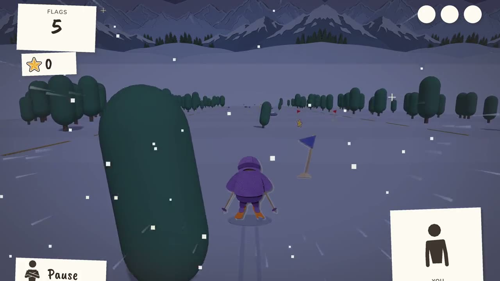
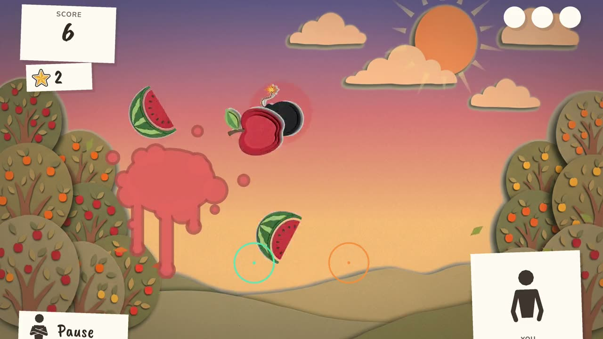
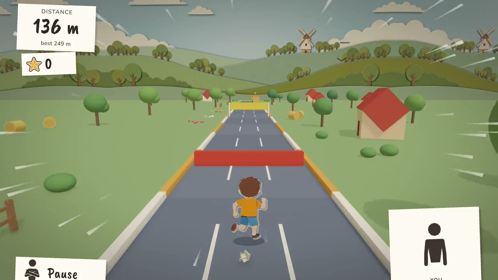
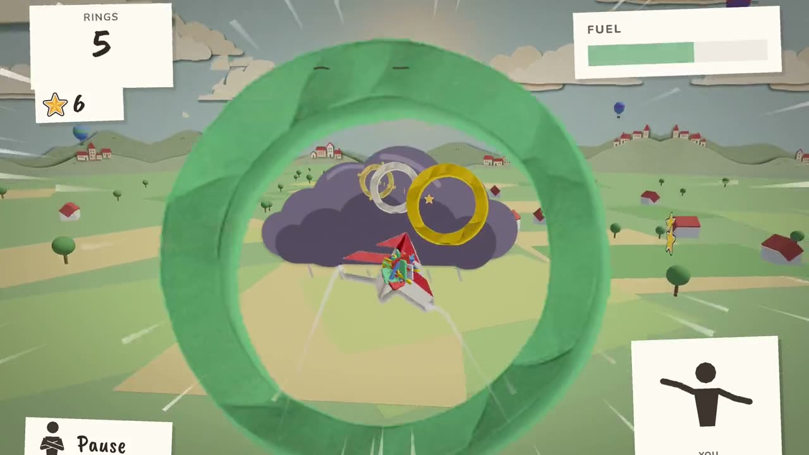
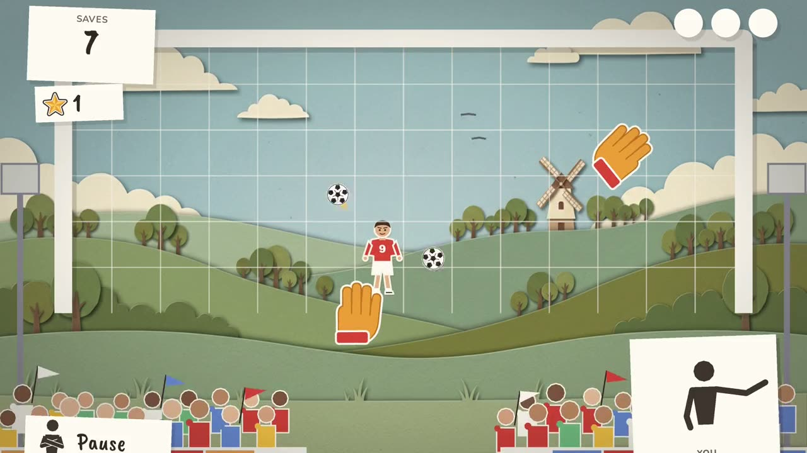
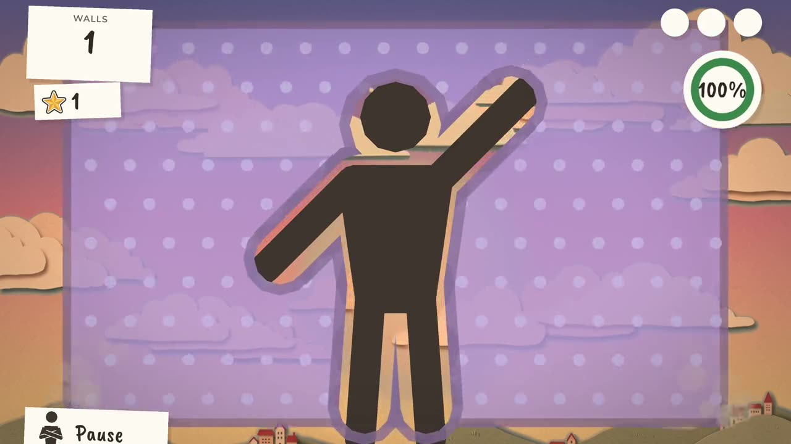
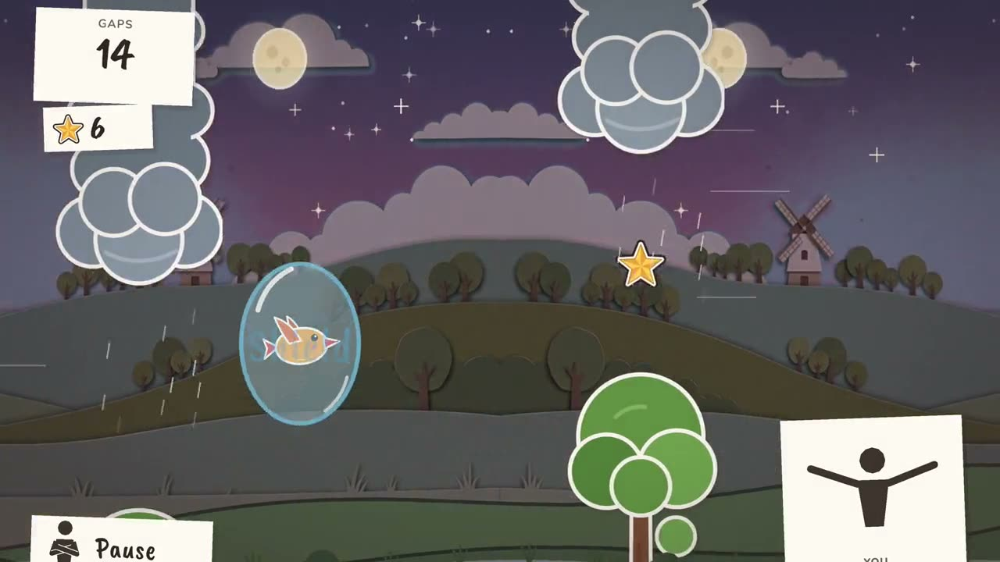
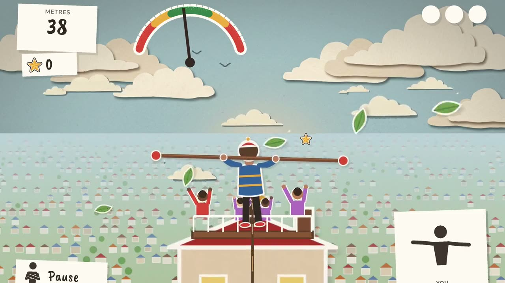

Exercise video games with no equipment
Some days you want to move without calling it a workout. In Off the Couch you run on the spot, jump, lean and flap your arms to play, with nothing to hold and no equipment to buy.
Play Fruit Slicer freeNo sign-in. Opens in Chrome or Safari.

Games first, not a workout plan
This is a set of games, not a fitness programme. There are no lessons and no trainer. You play for the score, and you end up moving because the game asks you to.
How each game gets you moving
- Legs: Body Runner has you running on the spot, jumping and ducking. Ski Slalom has you leaning and crouching.
- Arms: Bird Flap has you flapping to stay in the air. Airplane turns your arms into wings.
- Balance: Tightrope has you walking the line with your arms out.
- Quick reactions: Fruit Slicer and Goalkeeper have you reaching for whatever comes at you.
- Stretching into shapes: Hole in the Wall has you fitting your body through the gap.
All 8 games

FREEFruit Slicer
Slice the flying fruit with your hands

Body Runner
Run on the spot, jump and duck

Airplane
Your arms are the wings
Ski Slalom
Lean and crouch down the slope

Goalkeeper
Stop the shots with your hands

Hole in the Wall
Make the shape and fit through

Bird Flap
Flap your arms to fly

Tightrope
Balance with your arms out
For rainy days and families
Take turns and beat each other's score. Children should play with an adult nearby, and everyone needs about 2 metres of clear space.
Play safely
Clear the space around you and mind furniture, pets and little ones. Stop if anything hurts or you feel dizzy. If you have a health condition, ask your doctor before you start moving more.
All 8 games: $9.99, paid once. No subscription and no ads. Fruit Slicer stays free, with no sign-in.
Questions
Do I need any equipment?
No. You need a device with a camera, and about 2 metres of space.
Is this a fitness programme?
No. These are games. They get you moving, but they are not a training plan.
Can children play?
Yes, with an adult nearby and clear space around them.
Is it free?
Fruit Slicer is free to play, with no sign-in. One payment unlocks all 8 games.
Do I need to install anything?
No. The games open in Chrome or Safari.
More: Webcam games · Motion games · Rainy day activities · Brain break games · Family game night ideas · Games to play at home